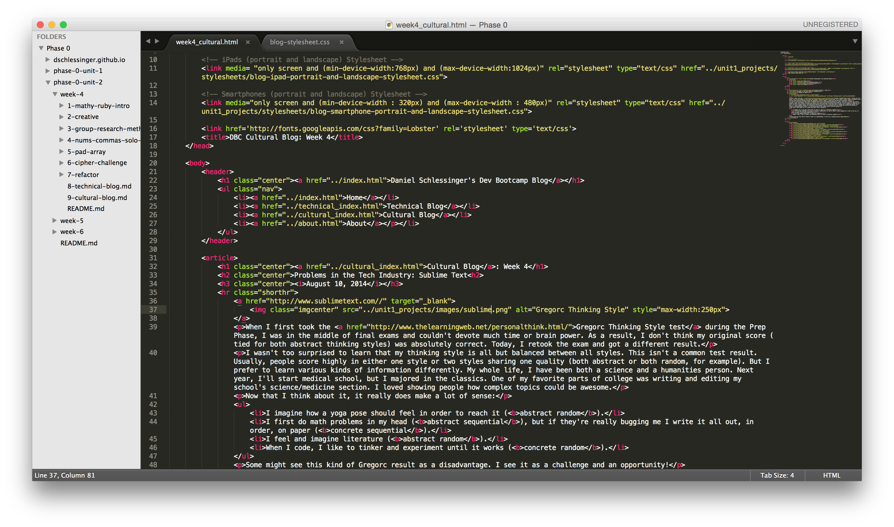
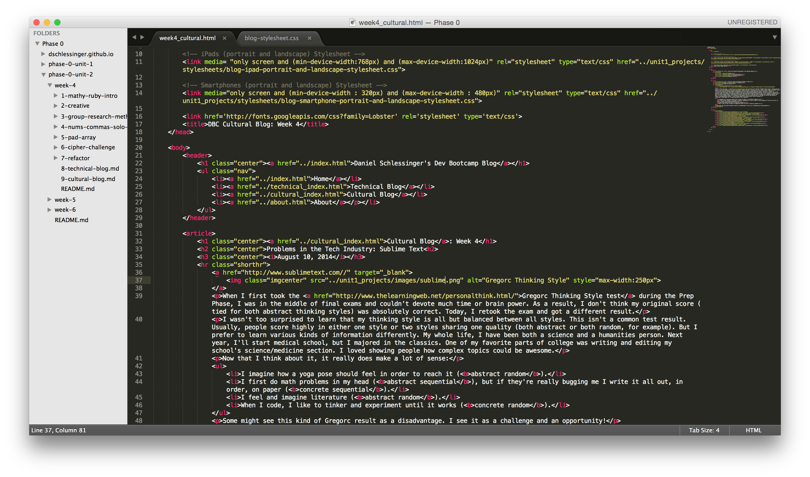

Cultural Blog: Week 4
Problems in the Tech Industry: Sublime Text
August 10, 2014

August 10, 2014

I was downloading a package for Sublime Text 3 last week, when I read that some people are starting to call Sublime "abandonware." Concerned, I looked over Sublime's website and noticed what many others have begun to criticize: Sublime hasn't had any version updates since the release of its beta version 3 in December 2013. I started reading that its founder, Jon, had virtually disappeared and had "long since abandoned regular updates." Of course, this would be problematic for any software - but it particularly affects us at DBC because Sublime is the text editor of choice here. Not to mention that Sublime Text 3 is an absolute joy to use, and it would be heartbreaking to hear that it's only downhill from here. Naturally, I wanted to come to the bottom of this. Here's what I found (h/t Reddit)
- Sublime isn't abandoned. Its founder, Jon, is a perfectionist and is working on a new version, hopefully to be rolled out sometime in August.
- That said...he's the only developer around. Yep, a software used by millions of people around the world is currently operated by 1 developer and 1 business development helper.
- Jon is working on Version 4, if you can believe it. Apparently he plans to bump up developer staff in the coming months. Let's wait to see if the non-beta version 3 is ever released.
I love Sublime. It beats any other text editor I've seen. Let's hope that Jon realizes he's got a winner and hire some developers.